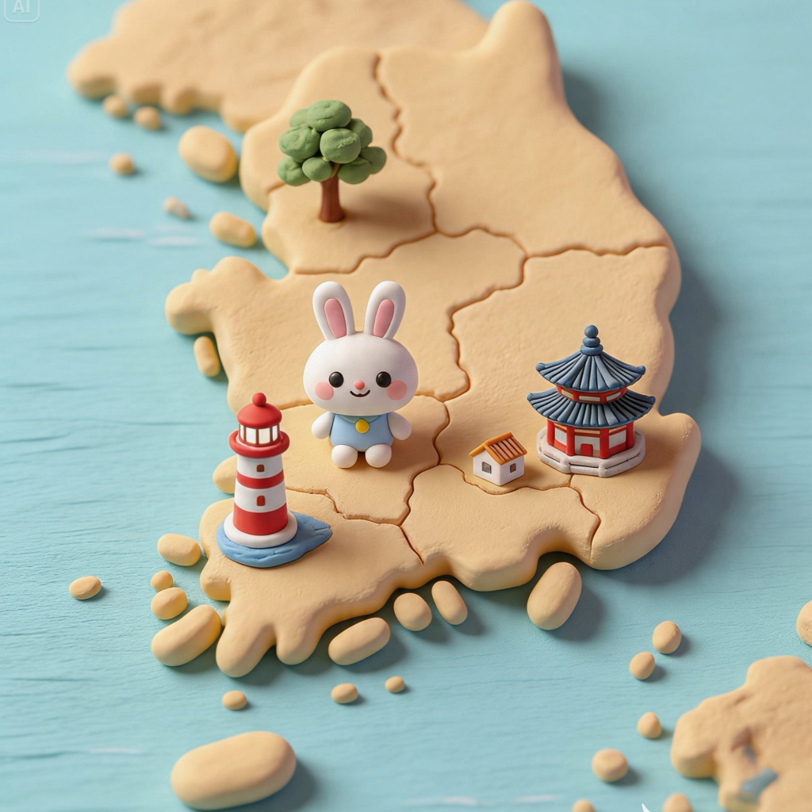
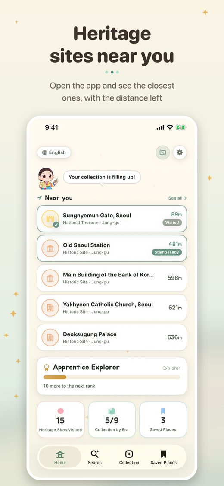
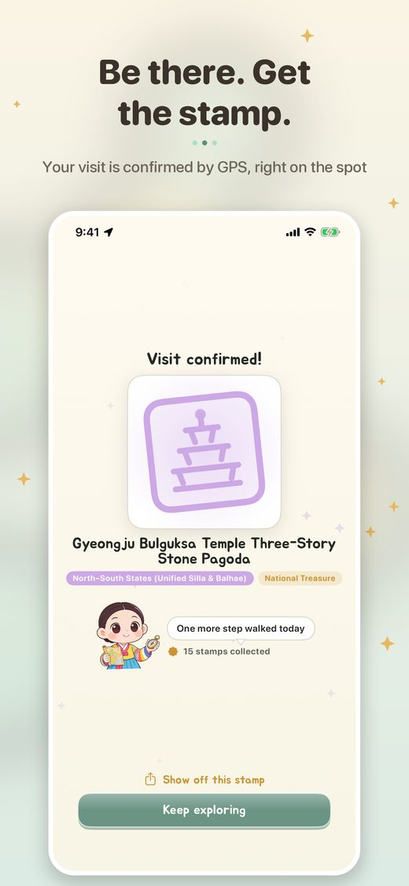
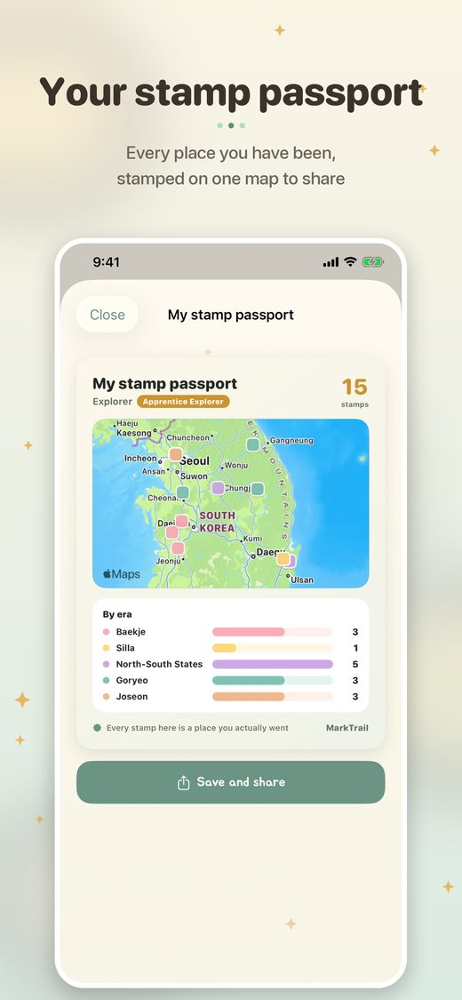

Collect stamps at Korea's heritage sites
Get it on the App Store


Open the app and see the closest ones, with the distance left
Your visit is confirmed by GPS, right on the spot
Every place you have been, stamped on one map to share
Free, with ads. No account needed.